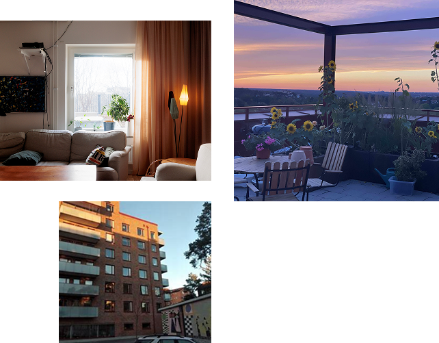

Kollektivhuset Kombo är ett modernt kollektivhus i centrala Göteborg där gemenskap, hållbarhet och delande är i fokus. Här bor människor i olika åldrar och livssituationer som vill ha både privatliv och social samvaro.


Utöver våra egna, fullt utrustade lägenheter delar vi på omkring 300 kvadratmeter gemensamma utrymmen. Här finns lek-, hobby-, gäst- och vardagsrum, en stor matsal med uteplats och två fantastiska takterrasser med utsikt över staden.
De här ytorna används flitigt, både för planerade aktiviteter och spontant umgänge. Vi har haft allt från loppisar och fester till luciatåg för barnen och filmkvällar för hela huset.
Två kvällar i veckan dukar vi upp till gemensam middag där vi turas om att laga mat. Det blir ofta en plats för skratt, samtal och nya idéer – lika mycket en måltid som en mötesplats.